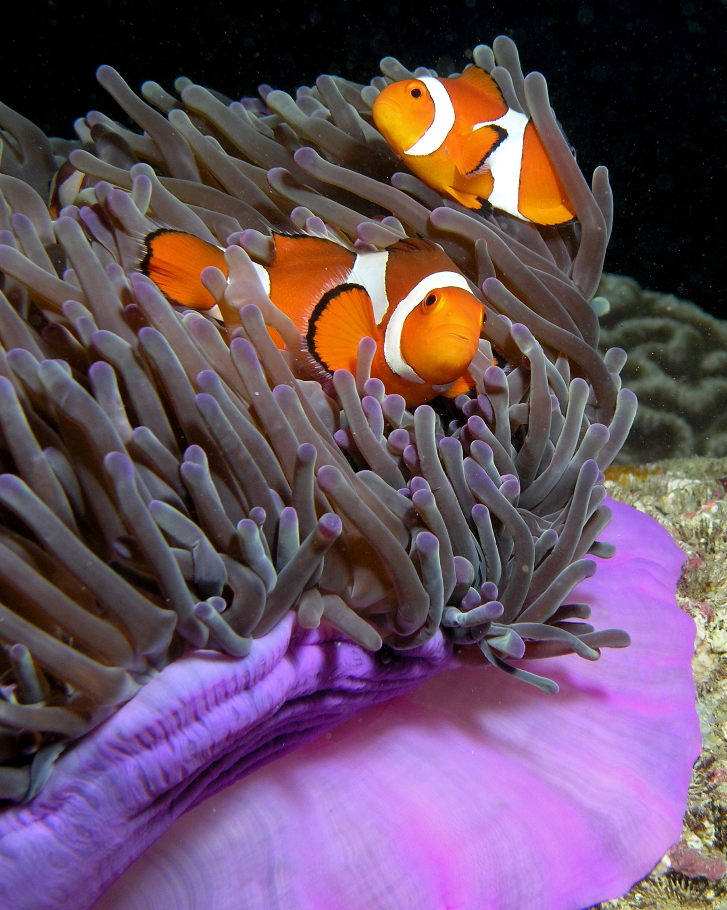

Le poisson clown
Description
Les poissons-clowns, ou Amphiprioninae, sont une sous-famille de poissons appartenant à la famille des pomacentridés. Elle contient trente espèces, une seule classée dans le genre Premnas, les autres faisant partie du genre Amphiprion. Ce sont des poissons d'une dizaine de centimètres dans les tons d'orange et de noir. Certaines espèces présentent des bandes ou des barres blanches. Ils fréquentent les lagons et les récifs coralliens du bassin Indo-Pacifique et de la mer Rouge où ils se nourrissent généralement de copépodes et de larves de tuniciers.

Source -
Le poisson clown